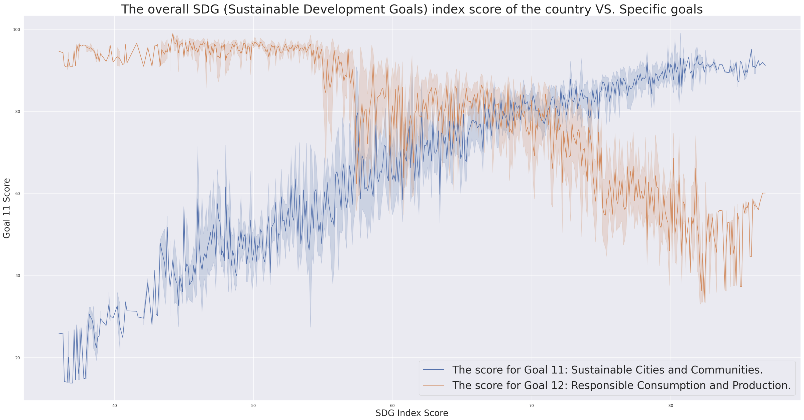

Our Journey:
Welcome to our exploration of Sustainable Cities and Communities: A Data-Driven Approach. This project is the culmination of rigorous research and analysis conducted by our team: Sohaib Kaidali, Illia Voropai, Valentina Perez, Maira Paynot, and Julian-Xerik Wierny. Our mission is to delve into the complexities of urban sustainability, unearthing the interconnected roles of consumption, economic systems, and historical factors in shaping our cities. Through a blend of data visualizations, critical insights, and innovative solutions, we aim to illuminate paths towards more sustainable and inclusive urban futures.
Introduction to Consumption
In the fabric of modern society, consumption patterns have been intricately woven by the threads of globalization, capitalism, and colonization. This section uncovers the historical journey of these forces, revealing how they have sculpted today's consumer habits and environmental impacts. From the expansive reach of global trade networks to the deep imprints of capitalist economies on natural resources, we explore the genesis of our current ecological footprint. Colonization's legacy adds another layer, highlighting disparities in consumption and environmental degradation. This narrative sets the stage for understanding the urgency and complexity of transitioning towards sustainable urban living.
Data Visualizations
As we navigate through the complexities of creating sustainable urban ecosystems and fostering responsible production and consumption, the role of data becomes undeniably pivotal. Through our meticulously crafted visualizations, we aim to shed light on the global community's journey towards the ambitious targets set by the United Nations Sustainable Development Goals. This section delves into an analytical comparison between the overarching SDG index scores and the specific strides made in achieving Goals 11 and 12.
Insightful Comparisons: The SDG Index vs. Goals 11 & 12
Our graph provides a concise yet insightful comparison between countries' overall Sustainable Development Goals (SDG) index scores and their specific achievements in Goals 11 (Sustainable Cities and Communities) and 12 (Responsible Production and Consumption). By overlaying these data points, we reveal patterns of progress and areas needing attention, highlighting how advancements in urban sustainability and consumption practices contribute to broader global sustainability efforts. This visual representation serves as a clear indicator of where we stand in our collective journey towards a sustainable future.
Sustainable Development Goals (SDG) Index vs. Specific Goals:
Through this graph, we present a comparative analysis of countries' overall performance in achieving the SDGs against their progress in specific goals. This visual representation sheds light on the multifaceted nature of sustainability and the varied challenges nations face.
Material Footprint and SDG Index Correlation:
We delve into the complex interplay between countries' metal ore imports and their overall material footprint, reflecting on how these factors influence their SDG index scores. This analysis uncovers the hidden costs of material consumption on a global scale.
CO2 Emissions vs. Electrical Manufacturing Exports
Highlighting the environmental toll of industrial activity, this section analyzes CO2 emissions in relation to the export values of the electrical manufacturing sector, emphasizing the need for greener production practices.
CO2 Emissions vs. Electrical Manufacturing Exports
This graph offers a comprehensive overview of the worldwide revenue generated from consumer electronics, tracking the financial growth across various segments such as smartphones, personal computers, tablets, and other gadgets over recent years. It vividly illustrates the market's dynamics, showing trends of increasing or decreasing revenue, and highlights the consumer electronics segments driving the global market. The data underscores the evolving consumer preferences and technological advancements shaping the industry, providing a clear snapshot of the sector's economic significance.
A Critique on Sustainability
"Sustainability" is often championed as the beacon for the future, defined by the United Nations as "meeting the needs of the present without compromising the ability of future generations to meet their own needs." Yet, this noble goal is fraught with complexities and challenges. In this critique, we scrutinize the metrics for measuring progress toward SDG Goal 11, addressing urban living conditions, air quality, public transportation, and more. Through this lens, we question the adequacy of current approaches and metrics in capturing the full spectrum of sustainability and push for a more nuanced understanding and action plan.
Conclusion
Our journey through the landscapes of sustainable cities and communities brings us to a crossroads. The stark revelation by a comprehensive UN study that "resource extraction is responsible for half of the world's carbon emissions" and causes "80% of biodiversity loss" is a clarion call for immediate action. As we reflect on our findings, we are reminded of the immense challenges that lie ahead but also the opportunities for innovation and transformation. The path towards sustainable urban development is complex, requiring the collective effort of governments, industries, and communities. It is a journey of resilience, adaptation, and reimagining our relationship with the planet.
Bibliography
- To delve deeper into the themes and data presented in this project, we invite our readers to explore the sources that have informed our work:
- Johanthan Watts, March 2019, The Guardian. "Resource extraction responsible for half world’s carbon emissions." World Commission on Environment and Development. "Report of the World Commission on Environment and Development: Our Common Future." United Nations, 1987.